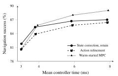

What remains after a correction
With further correction disabled, retaining the state lowers the next proposal's task loss by 3.2% in navigation and 4.4% in chain control. Both branches receive the same recorded observations, so the comparison isolates what their memories carry forward.
Most of the benefit is local: it fades over four inputs and is close to zero by eight.
When the optimizer is switched back on, it has less work to repeat. Over the next eight inputs, residual-Jacobian evaluations fall by 23.1% in navigation and 23.9% in chain control.

View figure ↗
Beyond a cached plan
Reusing a corrected action sequence already saves work. To test whether memory adds anything, we gave both branches the same corrected plan in their cache and resumed the same action-space solver. Keeping the state lowered the next eight inputs' realized cost by a further:
- Navigation
- 0.7%
- Chain control
- 1.1%
Relative cost reduction against the plan-only branch. Paired 95% intervals: [0.2, 1.2] and [0.3, 1.9]. The state intervention happens once; the plan cache is refreshed after each solve.
All four retention choices
| What is retained | Navigation | Chain control |
|---|---|---|
| Neither correction nor plan | 0 (reference) | 0 (reference) |
| Plan only | 1.1 ± 0.7 | 1.7 ± 1.1 |
| State only | 0.8 ± 0.7 | 1.4 ± 1.0 |
| State and plan | 1.8 ± 0.8 | 2.8 ± 1.2 |
The conditional state benefit is computed directly against the plan-only branch. It is not the difference between two table entries, which use the no-cache branch as their denominator.
Sections 5.1 and 5.2; Figure 2; Table 1 ↗
Full episodes and time budgets
Across full episodes, retaining rather than discarding state corrections raises navigation success from 82.7% to 85.4%. Chain control rises from 74.2% to 78.6%. Retain and discard use the same solver and settings.
Direct action refinement improves the present objective more than state search. Fitting its solution back into memory recovers most of the retention benefit.
Warm-started MPC reaches similar navigation success with substantially fewer contacts: 6.0 versus 14.2 per thousand steps. It also gains more from additional solve time. Retention is most useful here when each solve must stay small.

View figure ↗
Controller comparisons and timing
| Controller | Success (%) | Contacts / 1,000 steps | Mean time (ms) |
|---|---|---|---|
| Frozen recurrent policy | 68.4 ± 1.9 | 37.1 ± 2.3 | 2.10 |
| CBF filter | 79.2 ± 1.6 | 6.4 ± 0.8 | 2.58 |
| Predictive filter | 82.1 ± 1.5 | 4.1 ± 0.6 | 3.92 |
| Action refinement | 83.9 ± 1.4 | 15.9 ± 1.1 | 3.82 |
| Action + state fitting | 85.2 ± 1.3 | 14.4 ± 1.1 | 3.91 |
| State correction, discard | 82.7 ± 1.5 | 18.2 ± 1.2 | 3.81 |
| State correction, retain | 85.4 ± 1.3 | 14.2 ± 1.0 | 3.79 |
| Warm-started MPC | 85.8 ± 1.3 | 6.0 ± 0.7 | 3.93 |
The paired retain-minus-discard success gains are 2.7 percentage points [1.7, 3.7] in navigation and 4.4 [3.1, 5.7] in chain control.
Neural inference and derivatives run on an NVIDIA A100; MPC and predictive filtering use one CPU solver thread on the same workstation. Timing includes transfers, failed candidates, cache checks and synchronization. The envelope concerns measured latency on that system.